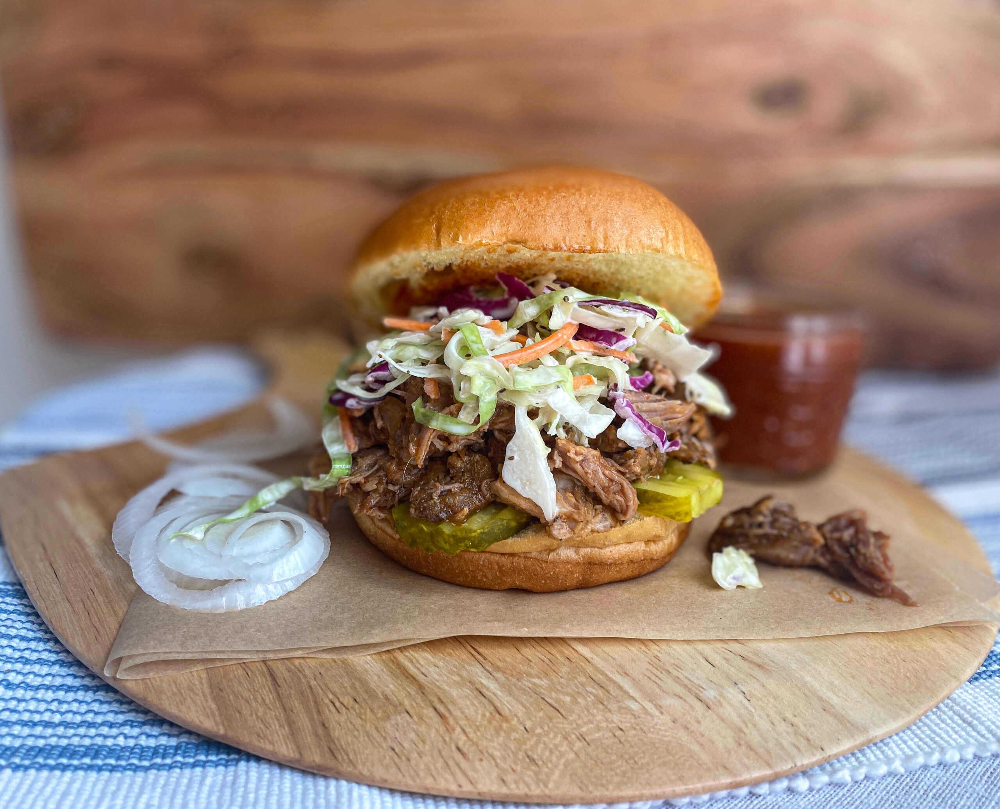

Slow Cooker Pulled Pork

Description
This simple slow-cooked pulled pork recipe is sure to be a hit at the family barbeque! Don't forget the buns!
Ingredients
- 4 1/2 pounds pork shoulder
- 2 tablespoons paprika
- 1 teaspoon oregano
- 1 teaspoon salt
- 1 teaspoon pepper
- 1/2 teaspoon cumin
- 1 yellow onion, diced
- 4 garlic cloves, chopped
- 1 orange, juiced
Steps
- Place the diced onion, garlic and orange juice in your slow cooker.
- In a small bowl, mix all of the spices together.
- Trim all excess fat from the pork shoulder, then rub the spice mixture generously around the entire pork shoulder and place in the slow cooker.
- Turn your slow cooker to low and cook for 8 hours.
- Once your pork is fully cooked, remove it from the slow cooker to a plate or cutting board and use two forks to shred the pork.
Additional Tips
- You can add some of the remaining liquid from the slow cooker to the pulled pork for extra moisture.
- This is a delicious BBQ sauce that’s also paleo and Whole30 friendly. It’s great on this pork!
- I’ve also heard great things about this slow cooker, if you’re looking to buy a new one.